地政学
メキシコシティは北米とラテンアメリカをつなぐ国家首都で、ソカロ周辺に政治、司法、報道、抗議、外交が集中します。祝祭や追悼の群衆も同じ広場を使い、水と地盤の弱さを抱え、首都の力と脆さが街路に現れる都市です。

🇲🇽 メキシコ / 北米 / World City Atlas
湖底の高原盆地に国家首都、先住民の記憶、植民地都市、地下鉄、市場、抗議、信仰、地盤沈下が重なる巨大都市です。
都市の骨格
テノチティトランの湖上都市、スペイン植民地の広場、近代国家の官庁、地下鉄と市場が、標高の高い盆地で同時に動いています。
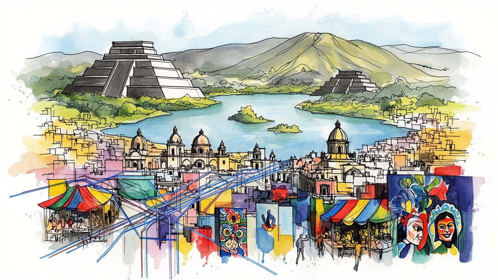
メキシコシティは北米とラテンアメリカをつなぐ国家首都で、ソカロ周辺に政治、司法、報道、抗議、外交が集中します。祝祭や追悼の群衆も同じ広場を使い、水と地盤の弱さを抱え、首都の力と脆さが街路に現れる都市です。
行政、金融、大学、観光、食品、デザイン、メディアが厚く、周辺州の製造業や物流とも結びつきます。市場、屋台、配達、清掃、家事労働など非公式経済も巨大で、統計に見えにくい仕事が日々の食事と買い物を支えます。
アステカの記憶、植民地教会、グアダルーペ信仰、壁画文化が重なり、死者の日や巡礼は家族の暦になります。映画、テレビ、マリアッチ、ソニデロの音も広場や夜の街に響き、信仰と娯楽が重なる夜の文化都市です。
歴史地区、博物館、ソチミルコ、市場、地下鉄、サッカー、ルチャリブレは訪問者の入口です。一方で住民には家賃、渋滞、水不足、治安、子どもの通学、高齢者の移動が毎日の条件となる文化都市です。生活も見えます。
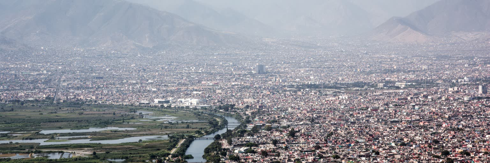
メキシコシティの地理は、標高の高い盆地と失われた湖を抜きに理解できません。都市の中心はかつてテスココ湖を含む湖沼地帯であり、現在の道路、地下鉄、広場、住宅地の下には軟弱な湖底の記憶が残ります。周囲を山に囲まれた盆地は、政治と商業を集めやすい一方、空気が滞留し、水の排出が難しく、地盤沈下や洪水を招きやすいです。スペイン植民地以降の排水事業と都市拡張は、湖を消しながら中心を広げてきましたが、その代償は今日の水不足、沈下、インフラ更新費として現れています。雨季の午後には高原の空が急に暗くなり、石畳や屋台のビニール屋根を雨が叩き、地下鉄の入口へ人が吸い込まれます。乾季にはほこりと排気が残り、朝晩の冷え込みがトルティーヤを焼く匂いや唐辛子の刺激を路地に広げます。都市を歩くと、高層ビル、植民地建築、露店、市場、地下鉄の駅が平らな地面に並ぶように見えますが、実際には地盤の揺れやすさと排水の不安が常に足元にあります。高原の涼しさは生活を支えますが、周辺の山地と盆地構造は大気汚染を閉じ込め、車社会と工業活動の影響を見えやすくします。メキシコシティの都市計画は、拡大する人口を受け止めるだけでなく、消した湖とどう付き合い直すかという長い課題を抱えています。雨をどう貯め、乾季の水をどの地区へ送るかは、住宅、学校、病院、商店の安心に直結します。地形は背景ではなく、政治、交通、健康、日々の感覚を左右する現役の条件です。
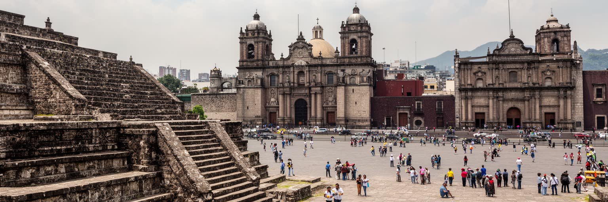
現在の歴史地区は、アステカ帝国の都テノチティトランの上にスペイン植民地都市が重ねられた場所です。ソカロ周辺では、テンプロ・マヨールの遺構、大聖堂、国立宮殿、格子状の街路が近距離に並び、征服、破壊、改宗、行政、商業の歴史が一つの広場に凝縮されています。先住民の都市は完全に消えたのではなく、石材、地名、儀礼、食、商い、都市の記憶として残り、植民地建築の足元で読み取れます。スペインは湖上都市の構造を変え、教会と役所を中心にした都市秩序を築いたが、先住民労働と地域の知識なしに都市は動かなかりました。歴史地区を観光地として眺めるだけでは、そこにある暴力と混合の時間を見落とします。メキシコシティの文化的な厚みは、先住民の記憶と植民地支配の痕跡が対立しながらも日常化している点にあります。市場で売られる食材、教会の祭礼、壁画の歴史観、地下の遺構は、国家の公式な物語とは別の声を持ちます。中心部の保存は建物を守るだけでなく、誰の歴史を都市の中心に置くのかを決める政治でもあります。石畳の美しさの下には、征服された都市がまだ呼吸しています。この重層性は、博物館の展示だけではなく、学校教育、祭礼、観光案内、政治演説の言葉にも現れます。先住民の過去を誇りとして語るほど、現在の先住民住民が直面する差別や貧困も問われる重要な問題であり続けます。
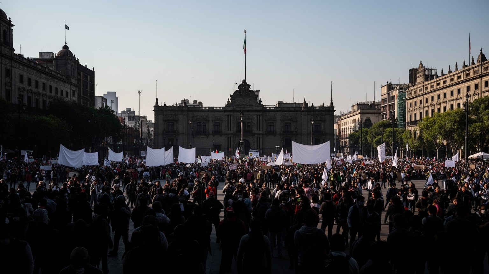
メキシコシティは、国家の制度が街路に現れる首都です。大統領府、議会、最高裁、連邦官庁、政党、報道機関、大学、労働組合、社会運動の拠点が集中し、政策の決定と抗議の声が同じ中心部に集まります。ソカロや大通りは観光の舞台であると同時に、独立記念日の祝祭、死者の日の装飾、選挙集会、追悼、労働要求、女性への暴力に抗議する行進、先住民や農民の要求が可視化される政治空間です。首都に来なければ国に届かない声があるため、地方の不満もこの都市へ流れ込みます。交通規制やデモの混雑は住民には負担ですが、民主主義の緊張が街に見えることでもあります。警察、露店、報道、観光客、通勤者、抗議者が同じ広場を使うため、都市の秩序は常に交渉で保たれます。学生運動の記憶は大学キャンパスや壁の言葉に残り、若い世代の討論や行進にもつながっています。テレビ局、新聞、ラジオ、デジタルメディアは抗議を全国へ伝え、同時に世論の対立も増幅します。政治は議場の中だけでなく、歩道、地下鉄、広場、大学の門前で続いています。抗議の日には地下鉄出口の物売りや警備員、通勤者も動線を変え、都市の生活リズムが政治に触れます。抗議の多さは不安定さの印象を与えますが、公共空間が社会の痛みを受け止める力を持つことも示します。混雑と声の中に、首都の役割がはっきり見えます。
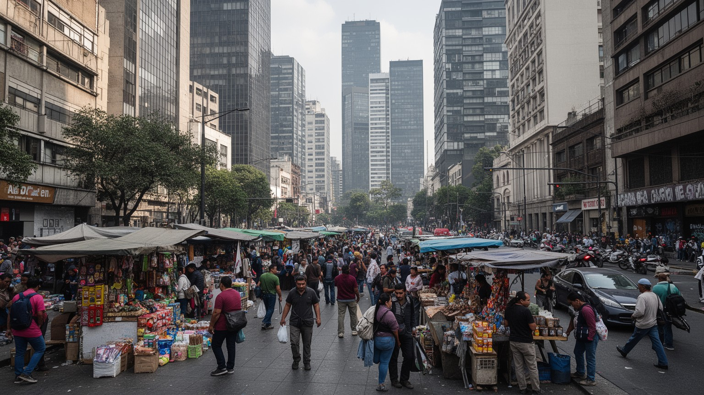
メキシコシティの経済は、行政、金融、通信、大学、医療、観光、食品、出版、デザイン、映画、音楽、物流が重なる巨大な都市圏経済です。都心には銀行や官庁、企業本部、文化施設が集まり、周辺部には倉庫、工場、卸売市場、住宅地が広がります。ですが、この都市を支える労働の多くは公式統計だけでは見えません。地下鉄駅の外ではタコスやタマルの屋台が朝の客を待ち、歩道では携帯部品、菓子、衣類、靴修理、花、くじが小さな商いとして並びます。露店、屋台、家事労働、修理、清掃、配達、警備、建設、家族経営の小店、日雇いの仕事が、通勤者の食事や買い物、移動を支えます。非公式経済は貧困の結果であるだけでなく、硬い雇用市場や高い生活費に対する生活戦略でもあります。露店は歩道を混雑させ、税や衛生、公共空間の問題を生む一方、低所得者に仕事と安い商品を提供します。大型モールやブランド店の買い物と、駅前の値切りや量り売りは同じ都市の消費です。高層ビルのオフィスで働く専門職と、地下鉄駅の外で食べ物を売る人は、同じ都市の時間を別の条件で生きています。メキシコシティの産業を読むには、GDPの大きさと同時に、社会保障に届かない労働、女性の家事労働、移動販売の知恵を見る必要があります。正規雇用を増やす政策は重要ですが、規制だけで露店を消せば生活の支えも失われます。労働者の権利、歩道の使い方、衛生と安全を同時に考えることが、都市の公正さを測る基準になります。
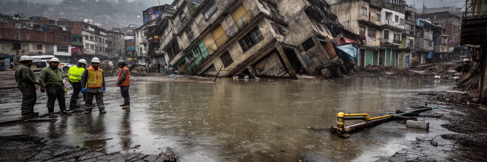
メキシコシティの最大の都市問題の一つは水です。かつて湖でした場所に広がる都市は、地下水を大量に汲み上げながら人口と産業を支えてきました。その結果、地盤は場所によって沈み、配管はゆがみ、漏水が増え、さらに水を失う悪循環が生まれます。雨季には豪雨と排水の問題があり、乾季には給水制限や水圧の低下が住民の不安になります。豊かな地区ではタンクや購入水で対応しやすいが、周縁部や低所得地区では水へのアクセスが生活の質を大きく左右します。水不足は自然条件だけではなく、都市の拡大、料金制度、インフラ投資、政治判断、地域格差の結果でもあります。盆地地形は大気汚染の問題も深刻にします。自動車、工場、建設、周辺火災、気象条件が重なると汚れた空気が滞留し、健康に影響します。改善策は進んできたが、長距離通勤と広域都市化が排出を生み続けます。地盤沈下は目に見えにくいが、教会の傾き、道路の段差、下水の流れ、地下鉄の維持に現れます。メキシコシティの環境問題は、自然を外に置いた近代都市の代償であり、湖底に都市を築いた歴史そのものが現在の生活を縛っています。水をどう使い、どこに住み、誰が不足を負担するのかが、都市の公平性を決めます。漏水を直し、雨水を貯め、緑地を増やす取り組みは技術だけでは足りません。住民が安心して水を得られる制度と、過剰な都市拡張を抑える土地政策が結びついて初めて、盆地の未来は少し安定します。
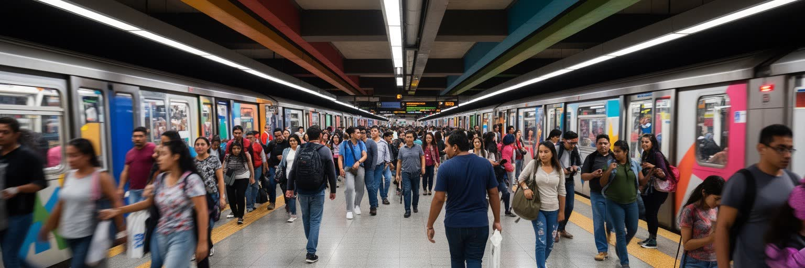
メキシコシティの広さは、地図上の面積よりも移動時間として感じられます。地下鉄、メトロバス、バス、ミニバス、ケーブルカー、徒歩、タクシー、配車サービスが重なり、数千万人規模の都市圏の日常を何とか動かしています。地下鉄は安価で広い範囲を結ぶため、低所得層、学生、通勤者、買い物客、高齢者にとって欠かせませんが、混雑、老朽化、安全、遅延、駅周辺の混乱も抱えます。車内には扉の警告音、物売りの声、イヤホンから漏れる音楽、乗換通路の足音が重なり、都市の密度が耳でわかります。女性専用車両や警備の強化は、公共交通が単なる移動手段ではなく、性暴力や治安への不安と結びついていることを示します。通勤圏は行政境界を越えて広がり、メヒコ州の住宅地から中心部へ長時間かけて通う人も多いです。道路渋滞は大気汚染を悪化させ、時間を奪い、物流や救急にも影響します。駅の外には屋台、新聞売り、靴磨き、ミニバスの呼び込みが集まり、移動は路上経済ともつながります。メキシコシティを読むには、観光客が使う中心部の移動だけでなく、早朝の郊外バス、混雑する乗換駅、徒歩で駅へ向かう住宅地まで見る必要があります。都市の距離は、誰がどれだけの時間を移動に支払うかで決まります。保守費用や安全対策を後回しにすれば、最も公共交通に依存する人ほど危険を負います。移動の改善は速度の問題だけでなく、女性、子ども、高齢者、障害者が安心して都市を使えるかという権利の問題でもあります。
メキシコシティの食文化は、屋台、メルカド、食堂、家庭料理、高級レストラン、卸売市場が連続する巨大な生態系です。トルティーヤ、タコス、タマル、モーレ、チレ、果物、菓子、スープ、コーヒーは、先住民の食材、植民地期の影響、地方移民の記憶を運びます。朝の角では鉄板で肉が焼け、唐辛子、ライム、コリアンダー、温かいトルティーヤの匂いが通勤の流れに混じります。市場は観光客が色彩を楽しむ場所である前に、住民が毎日の食材を買い、店主と関係を作り、近所の情報を交換する生活基盤です。巨大な中央卸売市場は都市圏の胃袋を支え、夜明け前からトラック、仲卸、労働者、飲食店が動きます。屋台は安く早い食事を提供し、通勤者や学生、子ども連れの家族の時間を支えますが、衛生、通行、許認可をめぐる緊張もあります。食は階級差も映します。洗練されたレストランが世界的な注目を集める一方、低所得地区では水、ガス、冷蔵、価格の問題が食の選択を制限します。メキシコシティの市場を歩くと、都市が地方の農村、漁港、畜産地、移民の労働に依存していることが見えます。食文化は単なる名物の集合ではなく、物流、労働、家族、宗教行事、季節の暦が重なった都市の記憶です。屋台の煙や市場の声は、公式な都市計画よりも長く続く生活のリズムを伝えています。食の豊かさを守るには、料理を称賛するだけでなく、仕込みを担う人、深夜に運ぶ人、早朝に売る人の労働条件も見る必要があります。
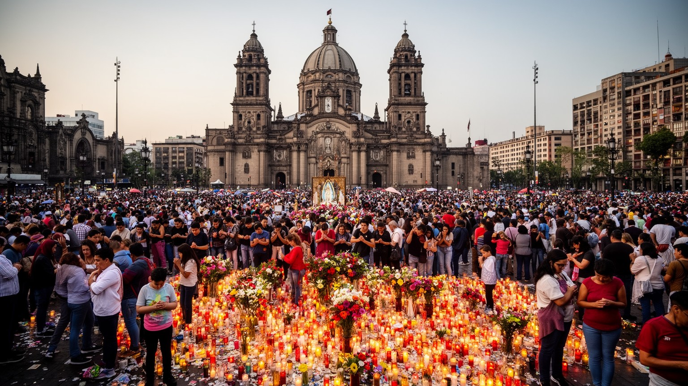
メキシコシティの宗教を語るとき、グアダルーペの聖母への信仰は中心的な位置を占めます。大聖堂や教会は植民地支配とカトリック化の痕跡を示しますが、グアダルーペ信仰には先住民の記憶、国家的なアイデンティティ、家族の祈り、巡礼の身体性が重なっています。毎年多くの人が聖地へ向かい、膝をついて進む人、子どもの手を引く人、高齢の家族を支える人、音楽や花を捧げる人の姿が都市の信仰を可視化します。宗教は教義だけでなく、病気、出産、仕事、移住、死者の記憶、地域の守護聖人をめぐる生活の支えでもあります。死者の日には家庭、学校、店、市場に祭壇が置かれ、紙飾り、砂糖菓子、写真、マリーゴールドの匂いが亡くなった人の記憶を街へ戻します。メキシコシティは世俗的で多様な大都市でありながら、祈りや祭礼が公共空間に強く現れる都市でもあります。市場や住宅街の小さな祭壇、タクシーや店先の聖像、教会前の露店は、信仰が日常の商いと移動の中にあることを示します。同時に、宗教的伝統はジェンダー、先住民性、貧困、政治運動とも結びつき、単純な観光資源には収まりません。巡礼の混雑、露店、寄付、警備、清掃は信仰を支える都市運営でもあります。祈りの場所は観光の名所である前に、不安や喪失を抱えた人が社会とつながり直す場所になっています。家族の記憶も重なります。
メキシコシティの住宅問題は、中心部の再開発と周縁部の拡大が同時に進むことで複雑になっています。歴史地区や人気地区では観光、飲食、短期滞在、オフィス需要が地価を押し上げ、古くからの住民や小さな店を圧迫します。一方、都市圏の外縁では、安い住宅を求めて遠くに住む人が増え、長時間通勤、交通費、治安、公共サービス不足に直面します。谷や斜面、元湖底、地盤の弱い場所にも住宅が広がり、災害リスクは所得によって偏りやすいです。高級地区には緑、警備、良好な道路、私立学校、医療が集まり、低所得地区では水不足、排水、舗装、照明、公共交通の不足が生活を重くします。子どもは通学路の安全と遊び場の少なさに左右され、高齢者は坂道、段差、遠い病院、混雑したバスに生活を制約されます。都市の家族は、世代を超えて同居したり、家を増築したり、親族ネットワークで住まいを確保したりしますが、雇用の不安定さと物価上昇はその工夫を難しくします。地震で被災した建物の補修や建て替えは、所有権、賃貸、保険、行政支援の問題を露出させます。住宅は単なる屋根ではなく、仕事へ行ける距離、水を得る権利、子どもの学校、女性の安全、介護、老後の支えを決める基盤です。中心部の魅力が高まるほど、清掃、調理、警備、介護を担う人が遠くへ追いやられる矛盾も強まります。住宅政策は景観整備ではなく、都市を支える人を都市に残すための条件です。
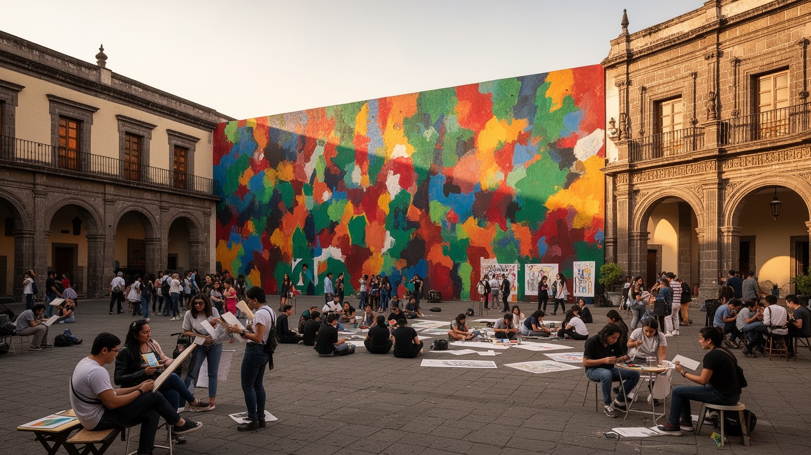
メキシコシティは、ラテンアメリカ有数の文化と教育の中心です。大学、研究機関、出版社、映画館、劇場、美術館、音楽、現代アート、壁画、独立系書店が密集し、学生、作家、アーティスト、研究者、政治活動家が都市の公共空間に声を与えてきました。大学キャンパスは学問の場であると同時に、学生運動、討論、出版、若者文化の拠点でもあります。映画会社、テレビ局、配信制作、ラジオ、新聞は全国の想像力を形作り、屋台のテレビや地下鉄の広告にも都市の話題が流れます。夜になるとガリバルディ広場のマリアッチ、地区のライブハウス、クラブ、ソニデロの音響が、観光だけでなく近隣の社交を作ります。壁画運動は、革命後の国家形成、先住民の表象、労働者、農民、社会正義を大きな壁面に描き、芸術をエリートの室内から街の記憶へ広げました。博物館や美術館は豊富ですが、文化の厚みは展示施設だけでなく、路上の本売り、地域の劇場、独立映画、ダンス、家族の祭礼にも宿ります。教育機会は都市の上昇の道を開く一方、私立と公立、中心部と周縁部、デジタル環境の差が格差を再生産します。文化産業は観光と結びつきますが、創作の現場には家賃、検閲への不安、資金不足、長時間労働もあります。都市が自由な表現を保てるかは、華やかな美術館だけでなく、小さな劇場や学生の集まる場所が残るかにかかっています。
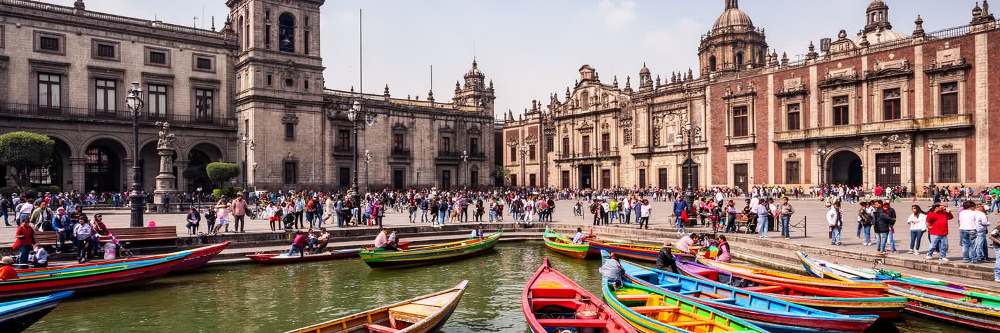
メキシコシティの観光は、歴史地区の広場、テンプロ・マヨール、大聖堂、国立宮殿、博物館、コヨアカン、チャプルテペック、ソチミルコの運河、市場、壁画を結ぶ多層的な体験です。さらにエスタディオ・アステカでのサッカー、アレナでのルチャリブレ、週末の買い物、夜の音楽は、都市を名所だけでなく娯楽の時間として見せます。世界遺産として知られる場所は、古い建築や景観の美しさだけでなく、先住民都市、植民地支配、独立後の国家形成、現代の生活が折り重なる価値を持ちます。ソチミルコの運河は観光船の明るい風景で有名ですが、湖沼環境の残存、農耕、都市化、水質、住民生活の問題も抱えます。観光が増えると、宿泊、飲食、交通、案内、清掃、警備に雇用が生まれる一方、中心部の家賃上昇や商業化が進み、住民の生活が押し出されることもあります。メキシコシティの観光を深く見るには、写真を撮る名所だけでなく、名所を維持する労働、保存費用、治安管理、地域住民の負担を見る必要があります。歴史地区の建物は地盤沈下や地震で傷みやすく、保存は常に修復と資金の問題を伴います。観光都市としての成功は、外から来る人を惹きつける力だけでなく、暮らす人がその場所を使い続けられるかで判断されます。旅の楽しさを支えるのは、案内人、料理人、清掃員、修復職人、警備員、交通労働者の仕事でもあります。観光が地域の誇りになるには、利益と負担を住民が納得できる形で分ける必要があります。
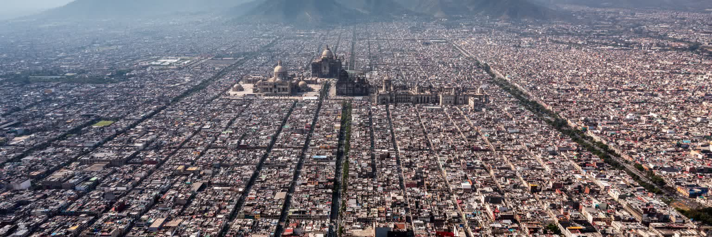
メキシコシティを総合的に読むうえで、地震の記憶は欠かせません。太平洋側で起きる巨大地震の揺れは盆地に伝わり、軟弱な湖底地盤で増幅され、遠い震源でも中心部に大きな被害をもたらすことがあります。過去の大地震は建物の安全基準、救助体制、市民の自助組織、避難訓練、地震警報、メディアの役割を大きく変えました。警報音が鳴ると、学校の子ども、職場の労働者、買い物中の高齢者、地下鉄の利用者がそれぞれの場所で避難を考えます。テレビとラジオ、携帯通知、近所の声かけは災害時の情報網になり、日常の都市感覚にも残ります。倒壊した建物や救助の記憶は、都市の悲劇であると同時に、市民社会が力を持つ契機にもなりました。地震は所得格差も可視化します。安全な建物に住める人、補修費を払える人、保険や法的支援に届く人と、危険な住宅や職場に残らざるを得ない人では、同じ揺れの意味が違います。都市の未来は、高層ビルや新しい交通だけではなく、古い建物の補強、学校と病院の安全、避難路、地域の連絡網、外国人や高齢者への情報提供にかかっています。水、地盤、抗議、信仰、市場、地下鉄、住宅、祝祭、音楽、食を一緒に見ると、この都市は単なる観光地ではなく、歴史の層と日々の不安を抱えながら動く世界都市として立ち上がります。揺れを記憶する都市は、過去の犠牲を生活の安全へ変え続ける責任を負っています。